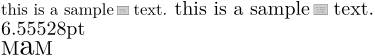

Contents
Summary
The command
\scale
is used for scaling an object.
Settings
Description
Scale
content
using different methods.
See \setupscale for parameter details.
Examples
Example 1
-
\setuppapersize[A5] Spam. \\ \scale[factor=fit] {Spam.} \\ \scale[wfactor=max] {Spam.} \\ More spam. \\ \scale[scale=1500] {Spam.} \\ \scale[xscale=1500] {Spam.} \\ \scale[lines=2] {Egg.} \\ \scale[sx=2] {Egg.} \\ \scale[grid=halfline]{Sausage.} \\
Example 2
-
\definesymbol[Bsymbol][{\scale[width=1.6ex]{\externalfigure[myfile.pdf][page=1]}}] \define\mysym{\kern 0.2em \symbol[Bsymbol] \kern 0.3em} this is a sample\mysym text. \tfa{this is a sample\mysym text.} \the\dimexpr\fontcharht\font`M+\fontchardp\font`M\relax M\scale[height=\heightofstring{M}]{a}M
- 